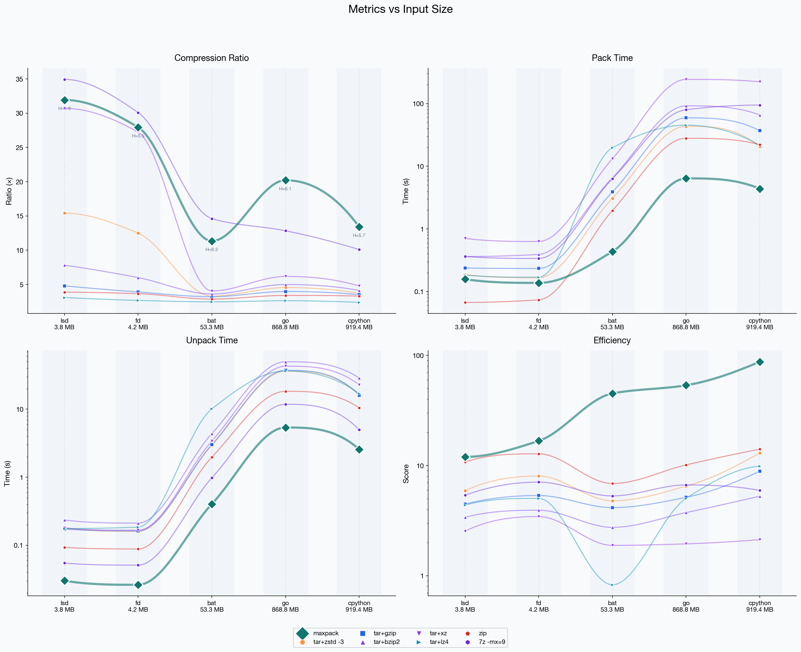
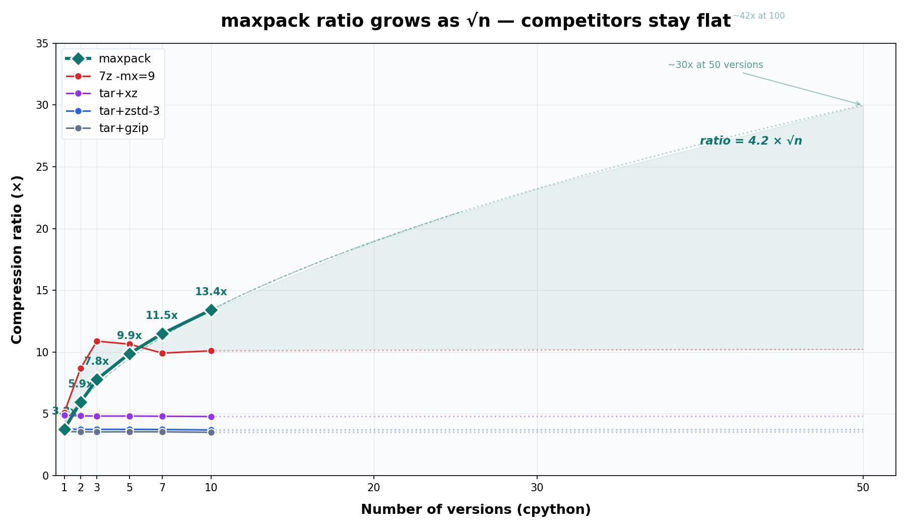

maxpack Public Benchmarks
This page uses the same canonical public benchmark story as the repository README:
maxpack pack --mode fast --global-zstd-level 3 on versioned corpora with
strong inter-version overlap. The goal is to keep the public narrative consistent across
the README, article, and release notes.
Focused Versioned-Corpus Snapshot
| Dataset | Input | maxpack | tar+zstd -3 | 7z -mx=9 | Ratio |
|---|---|---|---|---|---|
cpython_312 |
817 MB | 31.0 MB | 215.2 MB | 64.4 MB | 26.4x |
go_123 |
975 MB | 31.0 MB | 210.1 MB | 70.7 MB | 31.4x |
What This Means
On these focused versioned benchmarks, maxpack is roughly 6.8x-6.9x smaller
than tar+zstd -3 and about 2.1x-2.3x smaller than
7z -mx=9. These numbers are not intended to claim superiority on all possible
data classes; they specifically target datasets with substantial cross-version reuse.


Release Verification
Every release ships a plain-text SHA256SUMS.txt file. Download it from the
release page and verify the binary locally before first run.
Back to the repository: README